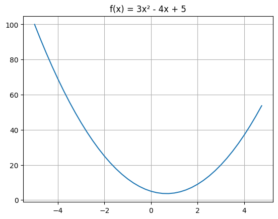
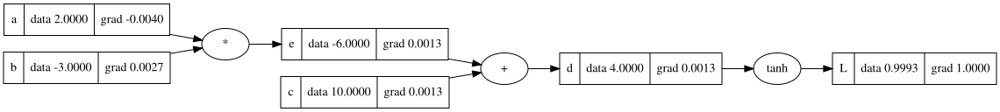
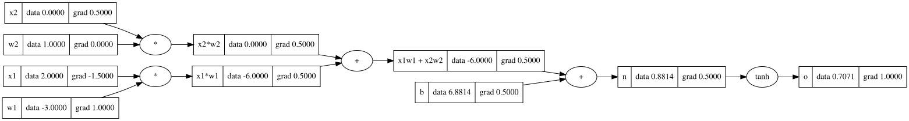
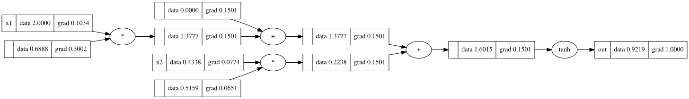
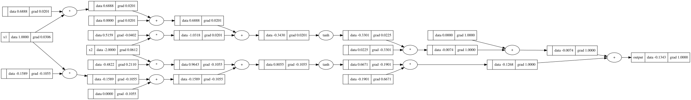
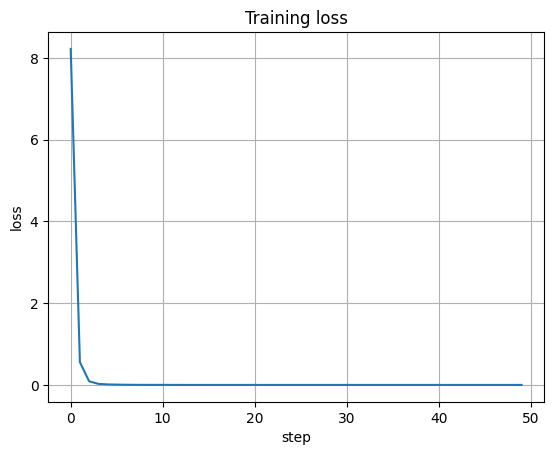
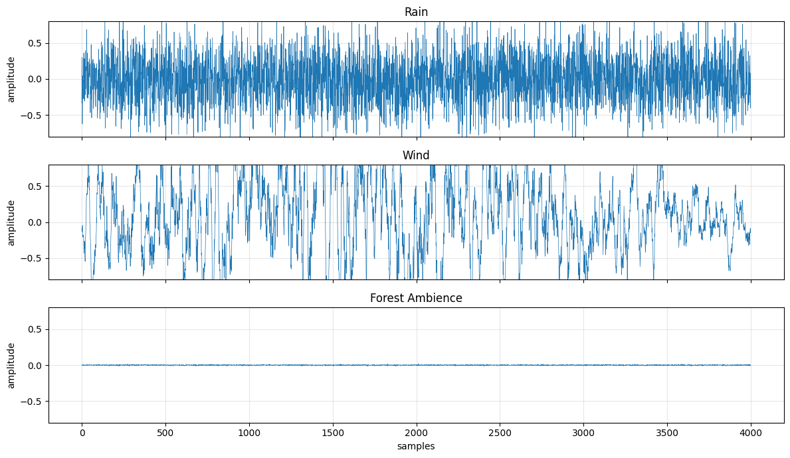
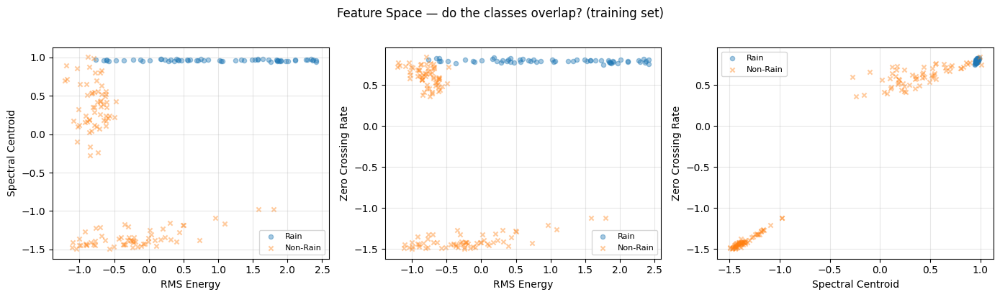
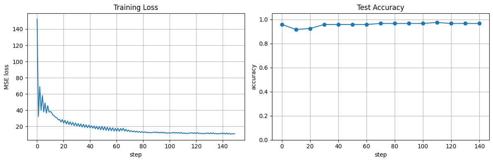
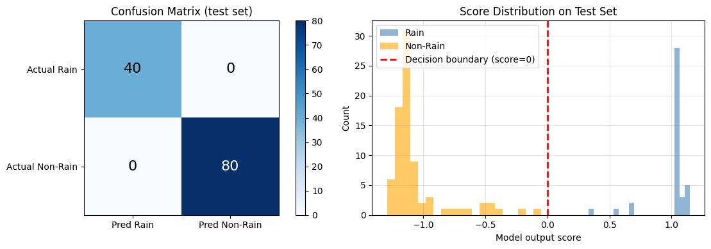

Lecture 1: Micrograd — Backpropagation from Scratch
Following Karpathy's Neural Networks: Zero to Hero, Lecture 1. We build micrograd, a tiny scalar valued autograd engine, then a neural net library on top of it. Every operation builds a computation graph. Call .backward() and gradients flow from the loss all the way back to the inputs via the chain rule. Then we apply it to audio: classify synthetic soundscapes using hand crafted features.
What is a derivative?
Before building anything, the intuition has to be rock solid. A derivative tells you: if I nudge the input by a tiny h, how much does the output change?
def f(x):
return 3*x**2 - 4*x + 5
x = 3.0
h = 0.001
numerical_grad = (f(x + h) - f(x)) / h # → 14.003
# analytical: f'(x) = 6x - 4 → at x=3 → 14.0

The numerical derivative (14.003) matches the analytical one (14.0). The tiny residual is just because h isn't infinitely small. Same idea extends to functions of multiple inputs: nudge each input independently, measure how the output changes. That's the partial derivative.
a = 2.0; b = -3.0; c = 10.0
d = a*b + c # = 4.0
# dd/da = -3.0 (= b), dd/db = 2.0 (= a), dd/dc = 1.0
The Value class: building the autograd engine
We wrap every scalar in a Value object that stores the data, remembers its children in the compute graph, stores the gradient (initialized to 0), and holds a _backward function that knows how to propagate gradients through that specific operation.
class Value:
def __init__(self, data, _children=(), _op='', label=''):
self.data = data
self.grad = 0.0
self._backward = lambda: None
self._prev = set(_children)
self._op = _op
self.label = label
Every time you do a * b or a + b, a new Value is created that remembers a and b as its children and stores the appropriate _backward function. Addition propagates gradients equally to both inputs. Multiplication swaps: da = grad * b.data, db = grad * a.data. Tanh applies the chain rule: d_input = grad * (1 - output**2).
The key method is backward(), which does a topological sort of the entire graph and then calls each node's _backward in reverse order. That's it. That's backpropagation.
a = Value(2.0, label='a')
b = Value(-3.0, label='b')
c = Value(10.0, label='c')
e = a * b # -6.0
d = e + c # 4.0
L = d.tanh() # 0.9993
L.backward()
# a.grad = -0.0040, b.grad = 0.0027, c.grad = 0.0013

Manual backprop: a single neuron
A neuron is: output = tanh(w1*x1 + w2*x2 + b). Inputs, weights, bias, activation. That's the mathematical model of a synapse.
x1 = Value(2.0); w1 = Value(-3.0)
x2 = Value(0.0); w2 = Value(1.0)
b = Value(6.881) # chosen to make output ≈ 0.707
n = x1*w1 + x2*w2 + b
o = n.tanh() # 0.7071
o.backward()
# w1.grad = 1.0, w2.grad = 0.0 (x2 is 0, so w2 has no effect)
# x1.grad = -1.5, x2.grad = 0.5

Cross check with PyTorch: exact same gradients. Our engine works.
The neural net library
On top of Value we build three classes: Neuron (list of weights + bias, applies tanh), Layer (list of neurons), MLP (list of layers). Each class has a parameters() method that collects all weights and biases for gradient descent.
class Neuron(Module):
def __init__(self, nin, nonlin=True):
self.w = [Value(random.uniform(-1, 1)) for _ in range(nin)]
self.b = Value(0)
def __call__(self, x):
act = sum((wi * xi for wi, xi in zip(self.w, x)), self.b)
return act.tanh() if self.nonlin else act
A single neuron with 2 inputs, visualized:

A full MLP(2, [2, 1]), all the way from inputs to output:

Training on a toy dataset
4 examples, 3 inputs each, targets are +1 or -1. MLP(3, [4, 4, 1]) with 41 parameters. The training loop is dead simple: forward pass, compute MSE loss, backward, gradient descent.
for step in range(50):
ypred = [model(x) for x in xs]
loss = sum([(yout - ygt)**2 for ygt, yout in zip(ys, ypred)])
model.zero_grad()
loss.backward()
for p in model.parameters():
p.data -= 0.05 * p.grad
| Step | Loss | Predictions |
|---|---|---|
| 0 | 8.219 | [-0.64, 0.24, 0.25, -0.55] |
| 10 | 0.000 | [1.0, -1.01, -0.98, 1.0] |
| 20 | 0.000 | [1.0, -1.0, -1.0, 1.0] |
Converges in about 10 steps. The predictions snap to the targets.

🎧 Audio Application: Soundscape Classifier
Now the fun part. We apply our micrograd MLP to classify audio. Three synthetic soundscape classes: rain, wind, and forest ambience. For each clip we extract three hand crafted features: RMS energy (loudness), spectral centroid (brightness), and zero crossing rate (noisiness). Then we train our MLP to classify them.
The sounds
🌧️ Rain — broadband white noise at variable intensity. Key feature: high zero crossing rate (~0.5) and flat spectrum.
💨 Wind — amplitude modulated low pass noise. Key feature: very low ZCR (slow oscillations), low spectral centroid.
🌲 Forest Ambience — sparse chirps on a quiet background. Key feature: low RMS (mostly silence), high ZCR during chirps.
Spectral profiles

The spectrograms show the differences clearly. Rain has energy spread across all frequencies. Wind is concentrated in the low end. Forest has sparse bursts of high frequency energy (the chirps) on a quiet background.
Feature extraction
def extract_features(signal):
return [
rms_energy(signal), # loudness
spectral_centroid(signal), # brightness (normalized 0 to 1)
zero_crossing_rate(signal), # noisiness
]
# Rain: rms=0.186 centroid=0.501 zcr=0.497
# Wind: rms=0.057 centroid=0.150 zcr=0.028
# Forest: rms=0.060 centroid=0.400 zcr=0.455
Rain has high RMS and high ZCR. Wind has low everything. Forest has low RMS but high ZCR (the chirps push the zero crossings up). These features separate the classes, but not perfectly: a light rain and a strong wind gust can have similar RMS.
The dataset
Binary classification: rain (+1) vs non rain (-1). 180 training samples (60 per class), 120 test samples (40 per class). Variable amplitude per sample so the distributions overlap and the problem is actually hard.

Training
MLP(3, [8, 8, 1]) with 89 parameters. Same training loop as before, but with gradient clipping (cap gradients at ±5) to keep things stable.

Results
| Predicted Rain | Predicted Non Rain | |
|---|---|---|
| Actual Rain | TP = 40 | FN = 0 |
| Actual Non Rain | FP = 0 | TN = 80 |
100% accuracy, precision, recall, and F1 on the test set. The features separate the classes well enough that even our tiny micrograd MLP nails it.

The score distribution shows well separated peaks for rain (positive scores) and non rain (negative scores). No overlap near the decision boundary at 0. Clean separation.
What I learned
Every neural net is a mathematical expression. Forward pass evaluates it. Backward pass differentiates it. The chain rule is the entire trick. loss.backward() works because we built a topological sort of the graph and call _backward() in reverse order. Gradient descent is one line: param.data -= lr * param.grad.
For audio: the same backprop we built from scratch works on audio features exactly the same way as on any other data. RMS, spectral centroid, and zero crossing rate are the "old school" version of learned embeddings. Understanding them gives you intuition for what neural nets later learn automatically from raw audio. Later in the course (the WaveNet lecture) we'll see how to skip hand crafted features entirely and let the network learn its own representations.